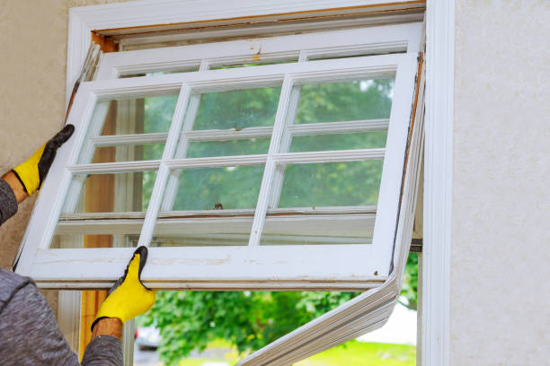
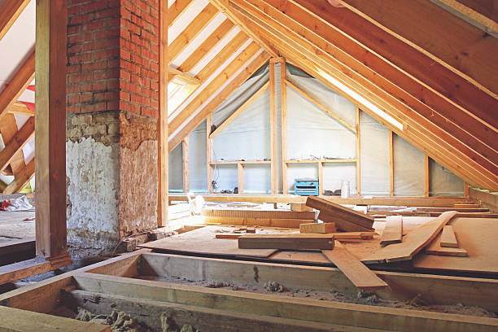
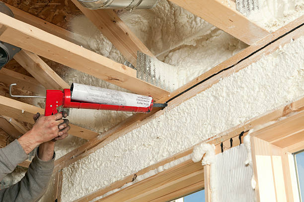

Insulate your home or business in Loyal Wisconsin with our top-rated insulation services. Save money, reduce noise, and improve energy efficiency today.
Click Here To Call Us (877) 848-1711Looking for reliable insulation services in Loyal Wisconsin ? Health Pro Insulation Services offers top-quality insulation solutions for residential and commercial properties, ensuring maximum energy efficiency and comfort. As the leading insulation company in Loyal Wisconsin we specialize in spray foam, fiberglass, and cellulose insulation, tailored to meet your specific needs. Whether you’re upgrading your attic, walls, basement, or crawl space, our certified professionals are here to help you reduce energy bills and create a more comfortable environment.
At Health Pro Insulation Services, we understand the unique climate challenges in Loyal Wisconsin . That’s why we use advanced insulation materials that not only keep your property warm in the winter but also cool in the summer. Our insulation services significantly improve indoor air quality by minimizing drafts and sealing gaps that allow heat loss. With our eco-friendly and energy-saving solutions, you can expect a noticeable reduction in your heating and cooling costs.
Choosing Health Pro Insulation Services means choosing a team dedicated to quality, safety, and customer satisfaction. We offer free consultations and energy assessments to ensure that your home or business receives the best insulation solution possible. Don’t let outdated insulation cost you more money—contact us today for a no-obligation quote and discover why Loyal Wisconsin homeowners and businesses trust us for all their insulation needs. Improve your property’s energy performance and enjoy a more comfortable space with our professional insulation services.
Residential & commercial Insulation Services
Quality services at affordable prices
Immediate 24/ 7 emergency services


Upgrading your home’s insulation is more than just a seasonal adjustment; it’s an investment in comfort, energy efficiency, and long-term savings. At Health Pro Insulation Services, we specialize in providing top-notch insulation solutions across all cities in Loyal Wisconsin . Our expertise ensures your home remains warm in the winter and cool in the summer, enhancing your overall living experience.
One of the primary benefits of upgrading your insulation is the significant reduction in energy bills. A well-insulated home maintains a consistent temperature, reducing the workload on your HVAC system. This not only cuts down on energy costs but also extends the lifespan of your heating and cooling units. With rising energy prices, enhancing your insulation could be one of the smartest financial decisions you make for your home.
Beyond savings, improved insulation contributes to a healthier indoor environment. By effectively sealing gaps, our insulation services help prevent dust, allergens, and pollutants from entering your living space. This is especially important for families with allergy sufferers, as it promotes better air quality and overall well-being.
Additionally, upgrading your insulation can increase your property’s value. Potential buyers recognize the benefits of a well-insulated home, which can lead to a quicker sale and higher return on investment. At Health Pro Insulation Services, we use the latest materials and techniques to ensure your home’s insulation is up to modern standards, providing lasting comfort and peace of mind.
Choose Health Pro Insulation Services to transform your home into an energy-efficient, comfortable oasis. Upgrade today and experience the difference!
Residential & commercial Insulation Services
Quality services at affordable prices
Immediate 24/ 7 emergency services
If your attic insulation is old, damaged, or inadequate, our attic insulation removal and replacement services in Loyal Wisconsin are what you need. Our team will safely and effectively remove outdated insulation, allowing us to install new, efficient insulation that enhances your home’s energy performance. We understand the importance of a well-insulated attic in protecting your home from extreme temperatures and energy loss. Choose us for our professional approach and reliable solutions tailored to meet your specific insulation needs.

When insulation starts to degrade, it can affect your home’s energy efficiency and comfort. Our insulation repair services in Loyal Wisconsin are designed to assess, diagnose, and rectify all insulation issues, whether it’s moisture damage, air leaks, or pest infiltration. Our expert team is equipped to handle repairs quickly and efficiently, restoring your insulation’s performance with minimal disruption to your home. Trust us for our commitment to quality service and effective solutions that prolong the life of your insulation.

Choosing the right insulation company is crucial for your project’s success. If you're searching for insulation companies near me, then Insulation Services is the name you can trust in Loyal Wisconsin . We pride ourselves on our reputation for excellence, reliability, and customer satisfaction. Our team of experienced professionals is dedicated to providing top-notch insulation solutions tailored to meet your needs. We offer a wide range of services—from installation to removal and repair—ensuring that we have something for everyone. Our commitment to quality, safety, and efficiency sets us apart from the competition. Choose us for your insulation needs, and see the difference our expertise and community focus can make.

Fiberglass insulation remains one of the most popular and effective options for homeowners and businesses. At Insulation Services, we offer professional fiberglass insulation installation services . Our team has extensive experience working with fiberglass insulation, ensuring it’s installed correctly for maximum thermal performance and energy efficiency. We start with a comprehensive evaluation of your property to determine the best application and R-value necessary for your specific situation. Using high-quality fiberglass batts or blown-in insulation, we work carefully to provide seamless coverage that enhances both comfort and energy savings in your building. With our commitment to quality and meticulous attention to detail, you can trust us for your fiberglass insulation needs.

Making your home more energy-efficient not only saves you money but also reduces your environmental footprint. Our home insulation for energy savings services focus on maximizing the efficiency of your space through expert insulation techniques. We start with a comprehensive assessment of your home's insulation needs, identifying areas where energy loss occurs. Our solutions are tailored based on the latest energy-efficient materials and methods, such as spray foam and high-performance fiberglass. Our team’s commitment to quality and customer satisfaction ensures that your home will benefit from better temperature regulation and reduced utility costs. Trust us to help you create a more energy-efficient home that benefits both your wallet and the planet.
Spray foam insulation is rapidly gaining popularity among homeowners due to its exceptional energy-saving properties and versatility. Our spray foam insulation services for homes in Loyal Wisconsin provide an effective solution that seals gaps and cracks, preventing air leaks and promoting consistent indoor temperatures. This insulation type also functions as a barrier against moisture, controlling humidity and preventing mold growth. Our experienced technicians utilize state-of-the-art equipment to ensure precise and safe application. With a focus on sustainability and energy efficiency, choosing spray foam insulation means investing in long-term savings and comfort for your home. Let us help you achieve a better quality of life with our spray foam insulation services.

As winter approaches, preparing your home for colder temperatures is essential to ensure warmth and comfort. At Insulation Services, we specialize in insulation services for winterizing homes in Loyal Wisconsin . Proper insulation is the key to preventing heat loss and ensuring your heating system operates efficiently. We evaluate your home to identify areas in need of insulation improvement, such as attics, basements, and walls. Our services include installing quality insulation materials that fit your home’s layout and energy needs. By winterizing your home with effective insulation solutions, you can enjoy a warm environment while reducing energy costs. Trust us to keep your home cozy and cost-effective through the cold winter months.

Don’t let your basement waste energy! Get expert insulation installation services .
Call Us Now (877) 848-1711Years Experience
Expert Technicians
Satisfied Clients
Compleate Projects
At Health Pro Insulation Services, we are committed to delivering exceptional insulation solutions for homes and businesses across Loyal Wisconsin . Our team of experienced professionals ensures that your property benefits from top-quality insulation designed to enhance energy efficiency and comfort throughout the year.
With years of industry experience, our certified experts specialize in a variety of insulation types, including spray foam, fiberglass, and cellulose. We understand the unique needs of properties in Loyal Wisconsin and tailor our services to address those needs effectively. Our insulation solutions are crafted to significantly reduce energy bills by improving your property's thermal performance, sealing gaps, and minimizing heat loss.
We offer personalized consultations and assessments to provide customized insulation solutions that best suit your specific requirements. Our focus is on delivering solutions that enhance comfort while addressing any unique challenges your property may face. By choosing Health Pro Insulation Services, you are opting for a service that prioritizes quality and customer satisfaction.
Our commitment extends from the initial consultation to the final installation. We use only high-quality materials and advanced techniques to ensure durable and effective results. Experience the benefits of improved energy efficiency and a more comfortable living or working environment with Health Pro Insulation Services in Loyal Wisconsin . Contact us today to schedule your free consultation and see how our expert insulation solutions can make a difference for you.
When you're searching for insulation contractors near me, you want to make sure you're choosing a reliable team that understands your needs. At Insulation Services, we pride ourselves on being the go-to insulation experts . Our skilled professionals bring years of experience and extensive knowledge to every project, ensuring you receive the highest quality service. We understand that proper insulation is key to enhancing energy efficiency and comfort in your home or business. That’s why we offer a comprehensive range of insulation services tailored to meet the specific requirements of our community. Whether you need assistance with installation, removal, or repair, we've got you covered. Our local presence means we are always nearby, ready to respond quickly to your needs. With our competitive pricing and commitment to quality, we stand out as the best insulation contractors in the area. Choose us for your insulation needs, and experience the difference quality makes!
Attic insulation is crucial for maintaining a comfortable home. As a homeowner you are likely aware of the significant impact attic insulation has on your energy bills and indoor climate. At Insulation Services, we specialize in high-quality attic insulation services. Our experienced technicians assess your attic space to recommend the most effective insulation solutions that align with your home’s architecture. We offer various materials, including fiberglass batts, blown-in insulation, and spray foam, to best meet your specific needs. Proper attic insulation not only reduces energy consumption but also enhances indoor air quality and prevents moisture damage. Trust our team to provide meticulous installation that ensures lasting performance. With our commitment to customer satisfaction and the best practices in the insulation industry, we ensure your attic transformation results in measurable savings.
When it comes to energy-efficient insulation solutions, spray foam insulation is at the forefront. At Insulation Services we offer premium spray foam insulation services designed to create an airtight barrier in your home. This innovative product expands upon application, filling gaps and cracks, which conventional insulation often misses. Not only does spray foam insulation improve energy efficiency, leading to lower utility bills, but it also enhances soundproofing and moisture resistance. Our trained professionals use the highest quality materials and the latest techniques to deliver flawless application, ensuring you get the full benefits of this modern insulation solution. Whether you are retrofitting an existing home or looking to insulate a new construction project, our dedicated team guarantees exceptional results with minimal disruption to your daily life. Choose us for your spray foam insulation needs, and experience the comfort and efficiency that comes with it.
Ensuring your home is adequately insulated is key to maintaining comfort and reducing energy costs. Our residential insulation installation services encompass a range of options, including fiberglass, cellulose, and spray foam insulation, each tailored to meet your needs and preferences. Our skilled team conducts a thorough evaluation of your property to recommend the best insulation type and installation method. We adhere to the highest industry standards to guarantee that your insulation is installed correctly and efficiently, enhancing the overall energy performance of your home. By choosing our residential insulation services, you're protecting your home against the elements, minimizing energy waste, and saving on utility bills. With our years of experience and commitment to quality, we are the best choice for insulation installation in Loyal Wisconsin .
Wall insulation is a crucial aspect of home comfort that often goes unnoticed. Our dedicated team of insulation contractors in Loyal Wisconsin provides professional wall insulation installation services designed to give you a more comfortable living space while also improving your home's energy efficiency.
When we assess your wall insulation needs, we take into account factors such as existing insulation condition, wall type, and your specific comfort requirements. We offer a variety of insulation materials, including blown-in cellulose, fiberglass batts, and spray foam, providing solutions tailored to your home.
Proper wall insulation serves to maintain a stable indoor temperature, reducing your reliance on heating and cooling systems, and consequently lowering your energy bills. Furthermore, we offer soundproof insulation options that ensure your home is a tranquil retreat from outside noise.
Choosing our wall insulation services means you are investing in quality craftsmanship backed by years of experience. Our commitment to excellence and attention to detail ensures that your insulation installation will contribute positively to your home's comfort and energy efficiency for years to come.
Home insulation is more than just a home improvement; it’s an investment in energy efficiency and comfort. Our home insulation services cover every aspect of insulation, from installation to removal and repair. Whether you're looking to upgrade your insulation or need assistance in an energy audit, our experienced team is here to help. We use advanced materials and techniques to ensure your home is protected against extreme temperatures while reducing noise pollution. Our commitment to quality craftsmanship and customer satisfaction ensures that we are your best choice for all your home insulation needs. By choosing our services, you are choosing a partner in enhancing your home's comfort and energy efficiency.
Insulating your crawl space is essential for maintaining your home's energy efficiency and protecting it from moisture issues. Our crawl space insulation services involve a meticulous approach to ensure that this often-overlooked area is properly insulated and ventilated. We utilize a variety of insulation materials to provide thermal efficiency and moisture control, thus preventing mold growth and insect infestations. Our team performs a detailed inspection of your crawl space to determine the best insulation solution tailored to your specific conditions. Choosing us means benefiting from our expertise and commitment to providing safe, effective crawl space insulation that enhances your home’s resilience and comfort.
Effective wall insulation is critical for reducing energy consumption and enhancing indoor comfort. At Insulation Services, we provide top-tier wall insulation installation services throughout Loyal Wisconsin . Our experts are well-versed in insulating various types of walls and understand the specific challenges presented by your home's structure. We use advanced techniques and high-quality materials to ensure excellent thermal resistance and soundproofing. Whether you are building a new home or renovating an existing one, our team delivers precise installation work that adheres to industry standards. With our commitment to energy efficiency and customer satisfaction, we proudly stand out as the best choice for wall insulation installation in Loyal Wisconsin .
Blown-in insulation is one of the most efficient ways to insulate your home, providing significant energy savings and comfort. Our blown-in insulation services utilize advanced technology to ensure thorough coverage in attics, walls, and other hard-to-reach areas. The process creates an air-tight barrier that significantly reduces heat loss and prevents air leaks. Our skilled technicians ensure a clean and efficient installation that enhances your home’s energy performance. Choose us for our innovative methods and unwavering commitment to customer satisfaction.
Finding affordable insulation services that do not compromise on quality can be challenging. At Insulation Services, we take pride in offering competitive pricing for top-quality insulation solutions . Our team believes that every homeowner should have access to energy-efficient insulation that enhances comfort and reduces energy bills. We provide a variety of insulation options tailored to fit your budget without compromising on the quality of materials or workmanship. Let us help you save money while creating a healthier living environment through our affordable insulation services.
Finding the best insulation contractors is essential for ensuring high-quality service and satisfactory results. At Insulation Services, we have built a reputation for excellence and reliability in the insulation industry. Our team is composed of highly skilled professionals who are dedicated to delivering exceptional workmanship on every project. We stay updated with the latest industry trends, materials, and technologies to provide you with the best solutions. Customer satisfaction is our top priority, and we take pride in our transparent communication and respect for your home or business. Our numerous satisfied clients are a testament to the quality and reliability of our services. Choose us, and see why we are hailed as the best insulation contractors .
Noise can be a significant source of disturbance, whether at home or in a commercial space. At Insulation Services, we offer advanced soundproof insulation services in Loyal Wisconsin . Our soundproof insulation solutions are designed to minimize noise transmission between rooms, enhancing the overall comfort of your environment. We understand the importance of a peaceful living or working space; thus, we provide tailored options depending on the specific needs and layout of your property. Our experienced technicians ensure professional installation and utilization of high-quality soundproofing materials that yield impressive results. Invest in soundproof insulation with us, and experience a quieter, more serene environment.
Building a new home is an exciting venture, and creating a comfortable, energy-efficient living space starts with the right insulation. Our insulation for new construction services are tailored to provide optimal solutions for homeowners embarking on this journey.
We work closely with builders and homeowners to ensure that the insulation systems we install meet and exceed local codes while adhering to best practices in energy efficiency. Our experts provide a range of insulation materials suited for walls, attics, and rooftops, ensuring every part of your new home is insulated effectively.
Our commitment to quality means we source only the best materials for your insulation needs, providing long-term savings on energy costs. Proper insulation in new construction also enhances indoor air quality by reducing the chances of moisture buildup and air leaks, contributing positively to the overall health of your environment.
Our knowledgeable team spans numerous insulation types and brands, guiding you through the selection process for the best-fit solutions for your new construction. Let our team facilitate a smooth and effective insulation installation that enhances the comfort and efficiency of your new home.
Insulating your roof is vital for maintaining comfortable temperatures and energy efficiency within your home. Our roof insulation installation services in Loyal Wisconsin specialize in providing long-lasting roofs that enhance your building's performance. We understand that roofs come in various types, and our experienced team is trained in various insulation methods suitable for your roof structure. With the right roof insulation, you can prevent heat loss, reduce energy costs, and prolong the life of your roof. We use high-quality materials and adhere to industry best practices to ensure effective installation. Choose us for your roof insulation installation and enjoy a more efficient and comfortable home.
Insulation can encounter wear and tear over time, which can lead to detrimental energy loss and uncomfortable living conditions. Our insulation repair services in Loyal Wisconsin are specifically designed to restore your home’s insulation effectiveness and ensure you maintain an energy-efficient environment.
Our certified contractors are equipped to identify and assess insulation problems, be it inadequate air sealing, compromised materials, or physical damage resulting from weather conditions or pest infestations. Once we evaluate your insulation’s condition, we recommend tailored repair solutions to address your specific issues while keeping your budget in mind.
Repairing insulation is often more affordable than complete replacement, and our team can work with you to ensure your home is energy-efficient without unnecessary expenses. By improving your insulation’s condition, you can achieve significant savings on your energy bills and enhance your home’s overall comfort.
With our team in Loyal Wisconsin you’ll experience prompt and professional service, ensuring your insulation repairs are conducted efficiently and effectively. Trust us to deliver the best insulation repair services when you need to restore comfort and energy efficiency in your home.
The right insulation is a vital aspect of any new construction project. Our insulation installation services for new constructions are designed to build a solid foundation for energy efficiency right from the start. We collaborate closely with builders and homeowners to ensure that the insulation choices align with the building’s design and energy efficiency goals. Our team of experts is experienced in a variety of insulation options to make your new home not just comfortable but also cost-efficient. Choose us for our thorough understanding of insulation in new builds.
Fiberglass insulation remains one of the most popular choices for homeowners seeking effective home insulation. Our fiberglass insulation installation services are designed to provide a comprehensive solution that enhances thermal efficiency and reduces energy costs.
Fiberglass insulation is known for its excellent R-values, which measure insulation effectiveness. By including this type of insulation in your home, you create a barrier that minimizes heat transfer, allowing you to maintain a comfortable indoor climate year-round. Our experienced team ensures the correct installation of fiberglass to eliminate gaps and thermal bridges that could undermine its performance.
Further, fiberglass insulation is cost-effective, fire-resistant, and does not shrink over time, making it a favored choice for homeowners aiming for longevity in their insulation systems. Our experts are committed to delivering superior installation services that adhere to the highest industry standards, assuring you of a durable and efficient insulation solution.
With expertise in various insulation types, including fiberglass, we can provide guidance tailored to your specifications. trust our team to deliver quality fiberglass insulation installation that optimally supports your home's energy performance.
Crawl space insulation is a critical step in preventing humidity from invading your home, especially in the varied climate of Loyal Wisconsin . At Health Pro Insulation Services, we specialize in providing top-notch crawl space insulation that acts as a barrier against moisture, ensuring your home remains dry and comfortable year-round.
Humidity can wreak havoc on your home, leading to mold growth, wood rot, and even structural damage. By insulating your crawl space, you create a protective shield that prevents dampness from seeping into your living spaces. This not only enhances your indoor air quality but also prolongs the lifespan of your property.
Our expert team at Health Pro Insulation Services uses state-of-the-art materials designed to effectively block moisture and regulate temperature. With our insulation solutions, you can reduce energy costs, maintain a consistent indoor climate, and protect your home from the costly effects of humidity.
Serving all cities in Loyal Wisconsin we take pride in our commitment to quality and customer satisfaction. Trust Health Pro Insulation Services to provide the crawl space insulation your home needs to stay safe, healthy, and energy-efficient. Secure your home against humidity with our professional insulation services today.
Loyal is a city in Clark County in the U.S. state of Wisconsin. The population was 1,261 at the 2010 census. The city is located within the Town of Loyal, though it is politically independent.
Yes, Health Pro Insulation Services provides free estimates to evaluate your insulation needs .
Yes, we offer blown-in insulation for attics and other hard-to-reach areas in Loyal Wisconsin .
Yes, we offer insulation removal services to safely dispose of old or damaged insulation in Loyal Wisconsin .
Yes, we offer insulation services for garages to help regulate temperature and improve comfort .
Yes, proper insulation can help control moisture and reduce drafts, which improves indoor air quality .
Key areas include the attic, walls, floors, and crawl spaces to ensure optimal energy efficiency .
Yes, insulating your attic is essential for energy efficiency, as it prevents heat loss in the winter and keeps your home cooler in the summer in Loyal Wisconsin .
Yes, proper insulation can significantly reduce your energy bills by improving your home's efficiency .
The cost of insulation varies depending on the type and size of your project. We offer free estimates to assess your needs .
Yes, we provide insulation services for new construction projects to ensure maximum energy efficiency .
Most insulation projects can be completed within one to two days, depending on the size of your property .
The best type of insulation depends on your home's structure and energy needs. We recommend spray foam or fiberglass for most homes .
Yes, insulation, especially spray foam and fiberglass, can help reduce noise between rooms and from outside .
Yes, we offer insulation solutions for metal buildings to improve energy efficiency and comfort .
Insulation typically lasts 15-20 years, but it may need replacement sooner if it’s damaged or no longer effective in Loyal Wisconsin .
Adding insulation improves energy efficiency, reduces energy bills, enhances comfort, and can even increase your home’s value .
If your home feels drafty, has uneven temperatures, or you have high energy bills, you may need more insulation .
Yes, proper insulation can help control moisture levels, which reduces the risk of mold growth .
We offer residential and commercial insulation services, including spray foam, fiberglass, and blown-in insulation .
Yes, fiberglass insulation is safe when properly installed and offers effective thermal protection in Loyal Wisconsin .
Some types of insulation, like fiberglass and certain spray foams, have fire-resistant properties to enhance safety .
Yes, we provide insulation services for commercial buildings to help businesses save on energy costs in Loyal Wisconsin .
Spray foam insulation can last up to 80 years or more with proper installation and maintenance .
Yes, insulation can help reduce condensation by maintaining consistent temperatures and controlling moisture .
Yes, adding new insulation can increase your home’s energy efficiency, comfort, and overall value in Loyal Wisconsin .
Yes, proper attic insulation can help prevent ice dams by maintaining a consistent roof temperature .
Spray foam expands to fill gaps and cracks, providing an airtight seal that boosts energy efficiency in Loyal Wisconsin .
We recommend clearing access to areas being insulated and making sure pets and children are safely out of the way during the process in Loyal Wisconsin .
Yes, we specialize in spray foam insulation for its superior sealing and energy-saving properties in Loyal Wisconsin .
Yes, we are fully licensed and insured to provide insulation services in Loyal Wisconsin .
“Health Pro Insulation Services made a noticeable difference in our home’s energy efficiency in Loyal Wisconsin . The insulation installation was quick and professional, and we’re seeing significant savings on our utility bills.” – Daniel A.
Profession
“The insulation services provided by Health Pro Insulation Services in Loyal Wisconsin were top-notch. Our home is now much more energy-efficient, and we’ve seen a reduction in our utility bills. The team was professional and reliable.” – Amanda C.
Profession
“We had Health Pro Insulation Services install new insulation in our office in Loyal Wisconsin . The difference in temperature control and energy savings has been remarkable. The crew was knowledgeable and completed the job on time. Great service!” – John D.
Profession